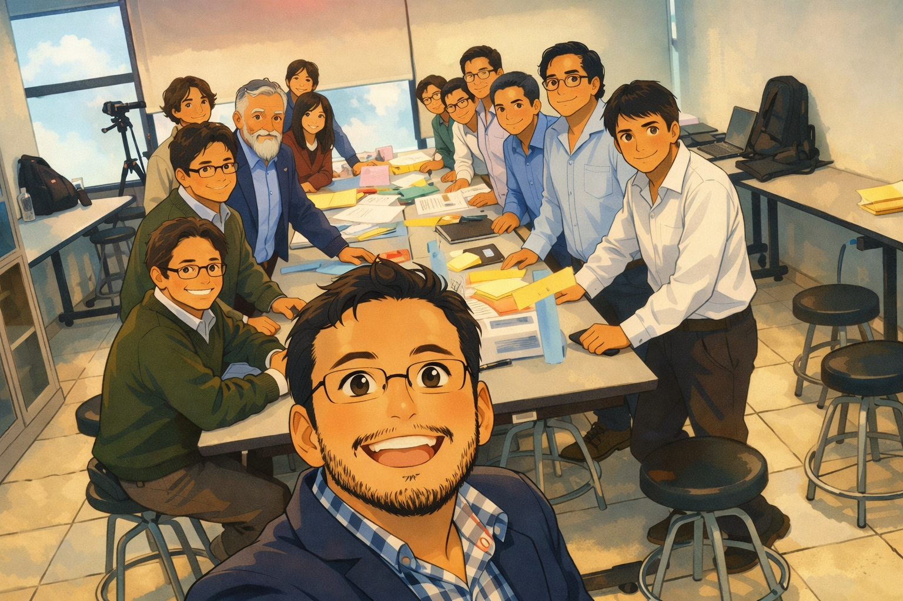
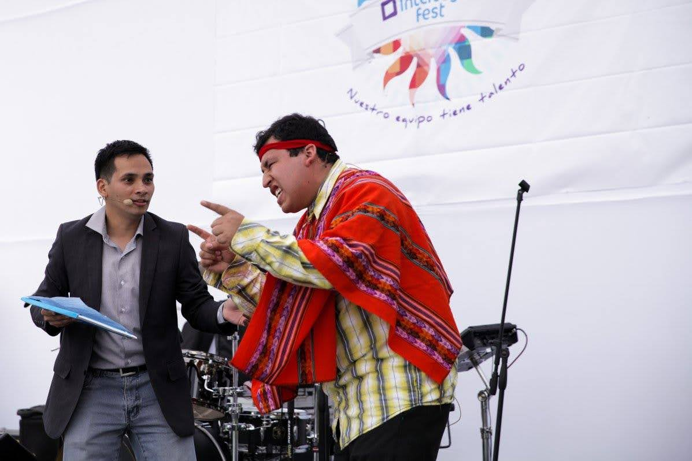

👨💻 Profesional en Sistemas con más de 14 años de experiencia liderando proyectos de transformación tecnológica en el sector financiero. Apasionado por conectar el negocio con la tecnología, he desarrollado soluciones innovadoras que han optimizado procesos clave como el cierre contable, mejorando significativamente los tiempos de ejecución.
✨ A lo largo de mi trayectoria he cultivado aptitudes que definen mi enfoque profesional:
Servicios: • Desarrollo • Consultoría • Workshops • Implementación
Local: Lima, Perú
Mi camino no se limita únicamente al ámbito tecnológico. Creo firmemente que el conocimiento, el arte y la creatividad son pilares fundamentales para el crecimiento personal y profesional. Por ello, he desarrollado diferentes facetas que reflejan mi pasión por enseñar, crear y compartir ideas. Estas son algunas de las dimensiones que complementan mi trayectoria:
A lo largo de mi vida he desarrollado diferentes pasiones que combinan educación, arte y creatividad.

Fundador de Fenix Academy, donde enseño tecnología, automatización y herramientas digitales para el trabajo moderno.

Creador de El Show del Cutervino, un espacio de humor y entretenimiento inspirado en personajes de la cultura popular.
Autor bajo el seudónimo El Poeta del Ilucán, compartiendo reflexiones, poesía y pensamientos sobre la vida.
.NET / C#, PHP, Java, VB.NET, SQL Server, Web Apps, Multiprocesos, Reporting Services
Automation Anywhere, Automy, Workato, Diseño de bots, Integraciones
C4 Model, Diseño de soluciones, Inventario empresarial, Modernización SI
Migración a Cloud, Infraestructura, Optimización de sistemas
Scrum, Agile Coach, Product Owner Assistant, Mejora continua
IA generativa aplicada, agentes IA, automatización con IA
Actualmente acompaño a la institución, generando automatizaciones, supervisando la operativa tecnologica y brindo soporte a los procesos. Tecnologías: WordPress, Google App Script, PHP, MySQL
Lideré el Squad de Automatización administrando 102 bots corporativos para acelerar procesos y reducir costos. Tecnologías: Automation Anywhere, Automy, Workato.
Conexión clave entre negocio y TI para modernizar procesos, reutilizar tecnología e impulsar eficiencia.
Aumenté en 30% la eficiencia de equipos de desarrollo. Creador de la Tribu TI y reestructuración de iniciativas.
Primer Arquitecto Empresarial. Eliminación de 30+ sistemas obsoletos, diseño C4 y optimización TI.
Migré un sistema de 10h a 15min mediante multiprocesamiento .NET. Desarrollo de sistemas críticos.
Gestión de 102 bots, automatizaciones complejas y optimización usando RPA.
Journey to Cloud, eliminación de sistemas, inventario TI, arquitectura C4.
Proyecto .NET crítico: reducción de 10h a 15min; web apps y sistemas escalables.
Optimiza tu productividad, domina funciones y fórmulas, casos reales.
Automatiza tareas simples con Google App Script, Make, n8n, ahorra tiempo y esfuerzo.
Usa IA en el trabajo, Creación de Documentos, Resuelve tareas rapido.
Fundamentos para principiantes, ejercicios prácticos y mini-proyectos.
Automatiza Google Workspace con scripts, dashboards y formularios.
Construcción de reportes avanzados, métricas y visualizaciones.
Marco ágil completo para equipos, roles, ceremonias y casos reales.
Introducción práctica al pensamiento lógico y la automatización.
Automatización de procesos usando herramientas gratuitas.
Puedes escribirme directamente por WhatsApp o correo:
Email: fredygonzales03@gmail.com
Web: fredygonzales.com
Conéctate conmigo